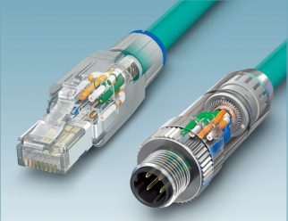
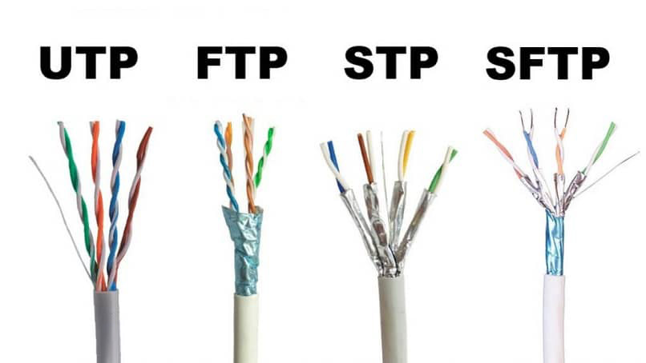
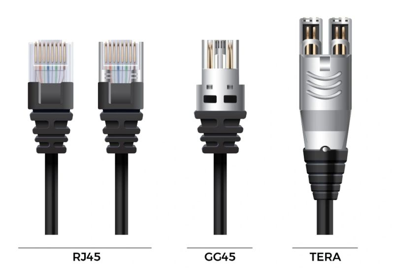
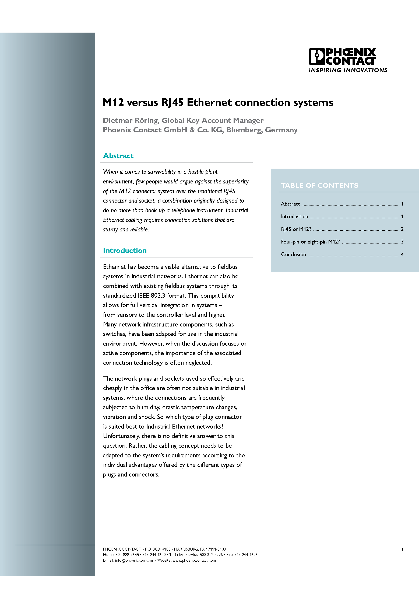
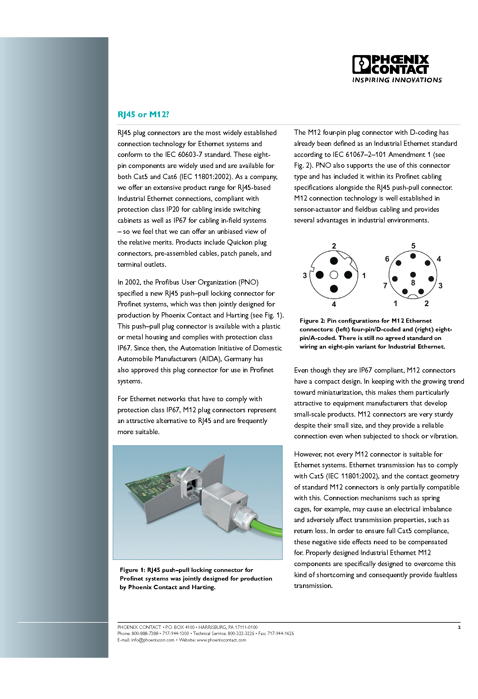
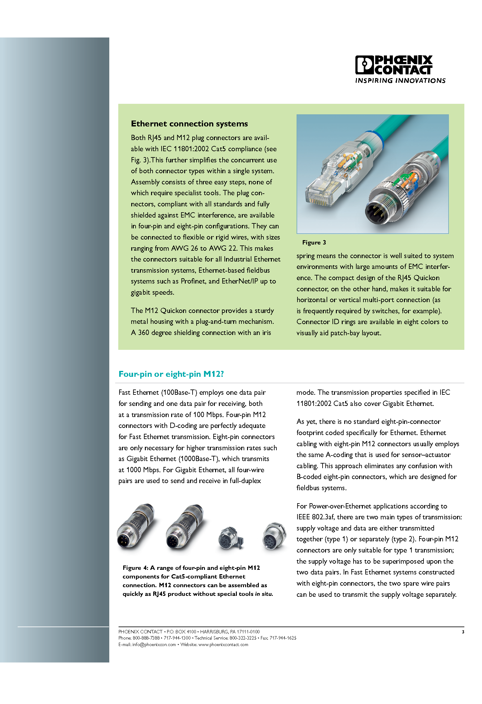

Ethernetkabel
De kans is groot dat je al ooit eens een ethernetkabel gebruikt hebt om je computer aan te sluiten op het netwerk.

Langs de uiteinden van de kabel vind je twee RJ-45 connectoren. Als je die connectoren eens van dichtbij zou bekijken dan zou je zien dat een ethernetkabel eigenlijk bestaat uit 8 dunne kabeltjes.
Sommige ethernetkabels hebben intern maar 4 kabels, bij dit type is de snelheid beperkt tot 100 Mbps in plaats van 1000 Mbps (= 1 Gbps) of zelfs 10000 Mbps (= 10 Gbps). Om die laatste twee snelheden te behalen moeten alle 8 kabels aanwezig zijn.
Die snelheden worden soms ook uitgedrukt als 10 Base T (= 10Mbps), 100 Base T (= 100 Mbps), 1000 Base T of Gig-T (= 1Gbps), 10G Base T (= 10 Gbps). De T staat telkens voor Twisted pair. Hierover later meer.
In de industrie ga je ook soms de M12 connector terugvinden.

Er bestaat natuurlijk ook een 8 wire variant.
De M12 connector wordt vooral gebruikt in omgevingen waar er trillingen of stof zijn. Het is dus een iets robuustere connector dan de RJ-45 connector.
Er zijn verschillende soorten ethernetkabels op de markt.
We onderscheiden eerst en vooral:
- Unshielded Twisted Pair (UTP)
- Foiled Twisted Pair (FTP)
- Shielded (Foiled) Twisted Pair (S(F)TP)
Alle types kabels worden getwist rond elkaar en de verschillen zitten in hoe de kabels afgeschermd worden van de buitenwereld. In sommige omgevingen is die afscherming meer dan nodig.
Bij UTP is er geen afscherming. Dit type kabel is niet geschikt om te gebruiken in een industriële omgeving omdat er vaak andere apparaten zijn, zoals motoren, die interferentie veroorzaken. Om de kabels af te schermen van die interferentie wordt er bij FTP een aluminium folie rond alle aders gewikkeld. Als die afscherming niet voldoende is gebruikt men STP kabel. Er wordt dan rond de individuele aderparen een folie gewikkeld. Als zelfs dat nog niet voldoende blijkt kan je een SFTP kabel kopen. Hierbij wordt een folie rond de individuele aderparen gewikkeld én rond alle kabels.

Een tweede onderscheid kunnen we maken op basis van de categorie:
- cat5e
- cat6 / cat6a
- cat7
- cat8
Een cat5e kabel kan snelheden aan tot wel 1 Gbps (Gigabit) en lengtes aan tot wel 100 meter aan één stuk voordat er verlies optreedt. Hoewel een cat5e kabel zeker niet slecht is, zijn cat6 of cat7 betere kabels.
Een cat6 kabel heeft als voordeel ten opzichte van een cat5e dat de maximumsnelheid 10 Gbps bedraagt over afstanden tot ongeveer 50m. Als je genoeg hebt aan 1 Gbps dan is de maximum lengte ook 100m. Een cat6a kabel haalt 10 Gbps over de volledige 100m. Verder hebben cat6 kabels een betere afscherming en betere connectoren dan cat5e kabels. Dit alles maakt dat cat6 een kwalitatief betere kabel is dan cat5e.
Terwijl een cat6 kabel 10 Gbps ondersteunt over een beperkte afstand, kan een cat7 kabel deze snelheid halen over de volledige 100 meter. Daarnaast biedt cat7 een nog betere afscherming tegen storingen en maakt het gebruik van geavanceerdere connectoren zoals GG45 of TERA, in tegenstelling tot de standaard RJ45-connector bij cat6 kabels.

Maar… Hoewel de officiële cat7 standaard connectoren zoals GG45 of TERA vereist, zijn er in de praktijk ook cat7 kabels met RJ45-connectoren verkrijgbaar. Deze ondersteunen snelheden tot 10 Gbps over 100 meter (hetzelfde als cat6a). Technisch gezien voldoen ze echter niet volledig aan de officiële cat7 specificaties. Ze worden vooral verkocht vanwege hun compatibiliteit met bestaande RJ45 netwerkinfrastructuur, waardoor ze populair zijn voor thuis- en kantoorgebruik.
Cat8 is de nieuwste generatie netwerkkabel en ondersteunt snelheden tot 40 Gbps over afstanden tot 30 meter. De kabel is volledig afgeschermd om storingen te minimaliseren. In tegenstelling tot cat7 maakt cat8 gebruik van de standaard RJ45-connector, wat zorgt voor compatibiliteit met bestaande apparatuur. Cat8 is vooral bedoeld voor datacenters en serveromgevingen, waar zeer hoge snelheid en lage vertraging essentieel zijn.
Belangrijk is om in te zien dat je elke categorie ook in de uitvoeringen UTP, FTP, STP en SFTP kan terugvinden. Je kan dus perfect een cat7 SFTP kabel kopen in de winkel. In de industrie wordt meestal cat6, cat6a of cat7 gebruikt.
| Categorie | Connector | Max. snelheid | Max. afstand |
|---|---|---|---|
| Cat5e | RJ45 | 1 Gbps | 100m |
| Cat6 | RJ45 | 1 Gbps / 10 Gbps | 100m / 50m |
| Cat6a | RJ45 | 10 Gbps | 100m |
| Cat7 | GG45 / TERA (soms RJ45) | 10 Gbps | 100m |
| Cat8 | RJ45 | 25-40 Gbps | 30m |
Als laatste kunnen we een onderscheid maken tussen een straight-thru en crossover ethernetkabel. In de meeste gevallen gebruik je een straight-thru kabel. Een crossover kabel heb je nodig als je twee toestellen van dezelfde soort rechtstreeks aan elkaar koppelt: twee computers, of vroeger ook twee switches of twee hubs. Als je onderstaande afbeelding wat beter bestudeert zie je dat Tx (Transmit) en Rx (Receive) gekruist worden.
Netwerkkaarten met een AUTO MDI-X functie kunnen detecteren dat ze aan een andere computer zijn gekoppeld in plaats van aan een switch. Als je een straight-thru ethernetkabel gebruikt dan gaat de kaart zelf Tx en Rx omwisselen waardoor het lijkt alsof je toch een crossover kabel gebruikt. In moderne apparatuur is AUTO MDI-X standaard.



